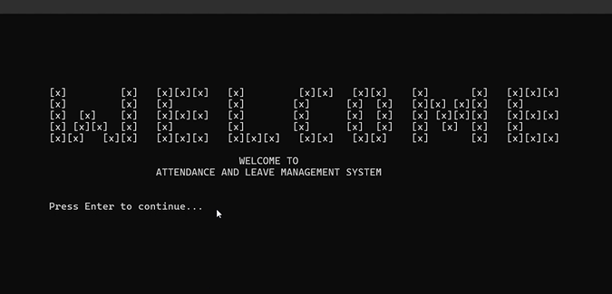

🥽
Featured
Select a Project
Click any project card below to see it featured here with full details.
🥽
Final Year Project I · VR / UX Research
VR Locomotion & Motion Sickness Study In Progress
Unity XR research project studying how different locomotion methods affect cybersickness, using the Simulator Sickness Questionnaire (SSQ) methodology.
🔐
Cybersecurity · Information Technology Security (BITS3423) · Group 12
ALMS Secure Web — Attendance & Leave System
Group project (Group 12) rebuilding ALMS as a security-hardened web app in PHP and MySQL. As backend developer, Fatnin built the Register, Login, Dashboard, Attendance, and Leave modules and implemented OWASP A01/A03 controls, deployed across two isolated Ubuntu VMs with HTTPS and UFW-restricted database access.

Film Production & Branding · Workshop II
Parallel — Short Film & Merchandise
Sci-fi short film produced by Studio Reflect — directed and edited by Fatnin, plus the full merchandise and brand identity line (posters, t-shirts, cupsleeves, paperbags) built around the film.
🎮
VR Development · Virtual Reality Technology
Sci-Fi VR Game
Immersive VR experience built in Unity XR for the Virtual Reality Technology subject, exploring player interaction and presence in a sci-fi setting.
🌐
Web Development · Web Application Development
Yeppeo Korean Restaurant — QR Ordering Website
Mobile-first, QR-code table ordering web app for a Korean restaurant concept — customers scan a table QR code to browse the menu and place orders, with PHP order processing and MySQL CRUD with input sanitisation and session management.
♻️
AI / Machine Learning
ECOTECH — AI Waste Classifier
ML image recognition app classifying recyclable materials (plastic, paper, glass, metal) to support recycling efficiency — decision tree classification built independently in Python with scikit-learn, pandas, and matplotlib in Colab.
🎲
Project Management · UI/UX Design
Sustainopoly — Unity Game
Monopoly-inspired board game built in Unity, teaching sustainability concepts through gameplay — developed for the Project Management subject with a focus on UI/UX design.
🧋
Desktop Application · Object-Oriented Programming
YooYoo — Drinks Ordering System
Desktop GUI system built with Java Swing, JDBC, and MySQL — a Customer module (register, login, browse Milk Tea/Fruit Tea/Smoothies, order, pay, membership discounts) and a Staff module for menu management, applying inheritance, polymorphism, and PreparedStatement for SQL-injection prevention.
📖
HCI · Augmented Reality
AR E-Book: Computer Hardware
Human-Computer Interaction project bringing computer hardware concepts to life through augmented reality overlays — prototyped in Figma, built in Unity AR, and validated with user surveys.
🏛️
Interactive Computer Graphics · System Integrator & Audio
UTeM 3D Campus Walkthrough
Real-time 3D campus walkthrough built in C++ with OpenGL/GLUT — textured buildings, animated cars on trigonometric paths, dynamic lighting, collision detection, and a day/night cycle. My role: system integrator (merging all modules and resolving conflicts) and audio designer (ambient sound via the Windows Multimedia API).
🗄️
Database & Data Structures
Blossom Cafe DB & SHIFTY-BURGERS
A fully normalised (3NF) relational database for a cafe, with ERD, stored procedures and triggers — paired with a C++ console food-ordering system using STL containers and algorithms.
🧊
Computer Animation
3D Animation & Character Models
Character modelling, rigging, and rendering in Blender for the Computer Animation subject.
📷
Digital Imaging for Multimedia
Mental Health Photography Series
A conceptual photography series exploring mental health themes, produced and edited in Photoshop for the Digital Imaging for Multimedia subject.
✨
Motion Graphics
Motion Graphics
Four assignments for the Motion Graphics subject and Motion Graphic Exhibition club — weather forecast, Raya-themed, sound effects, and an in-progress documentary final project. Produced by Horizon Gate with FTMK's Media Unit and Motion In Focus, in collaboration with Radifin
🕸️
Game Play (Faculty Free Module) · Group Project
Haunted Board — Horror Board Game
A Malaysian-horror-themed strategy board game built with a team of four — Fatnin designed the Action, Challenge, and Quiz card sets, while a teammate designed the board itself.
🎨
Digital Art · Personal Project
Pixel Art & Creative Coding
Personal pixel art and digital illustration work, alongside creative coding practice in Python on Codedex.

Solo-Built System · Workshop I · 2024
Attendance & Leave Management System
A full desktop attendance and leave management system, solo-designed and built from the ground up in C++ with MySQL on XAMPP — RBAC across Admin, Manager, and Employee levels, clock-in/out, leave approval workflows, and reporting analytics.